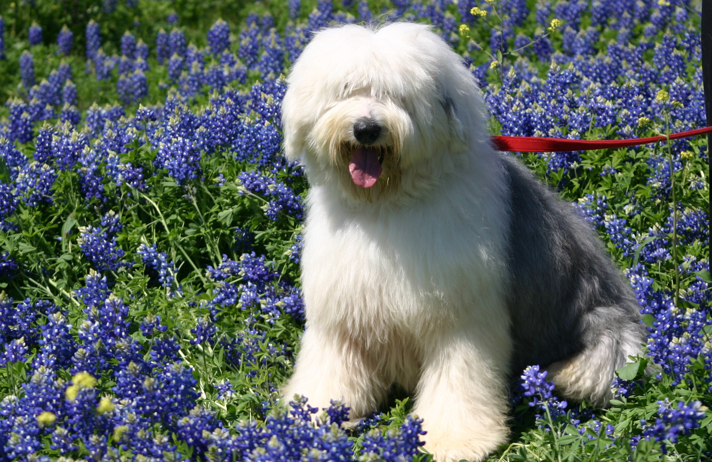

Бобтейл (староанглийская овчарка)
- Продолжительность жизни: 10-12 лет
- Группа: Пастушья
- Окрас шерсти: бело-черный, серо-белый, серый с белыми или черными отметинами
- Длина шерсти: длинная
- Линька: сильная
- Рост : 56-61 см
Староанглийская овчарка - большая и хорошо сложенная собака, о которой ходят легенды по всей Европе,
не говоря уже про Великобританию.
Особенности экстерьера: коренастое, мускулистое тело (именно это и является отличительной особенностью бобтейла);
широкая, глубокая грудь; совершенно прямые передние конечности с маленькими круглыми лапами; небольшие уши,
плотно прилегающие к голове; большой черный нос; коротко купированный хвост (хотя некоторые собаки рождаются без хвоста).
Внешне бобтейл выглядит взъерошенным. Однако если вы будете ухаживать за ним, у него будет совершенно другой вид: чистый и опрятным.
В движении, своей походкой бобтейл похож на медведя. Лает он тоже по-особому.
Его низкий лай в лесу на прогулке ни с чем не спутаешь. По своей натуре староанглийская овчарка преданная, добрая и очень милая.
Обучить и натренировать ее совершенно несложно. Если Вы сами займетесь этим, то собака привяжется к Вам на всю жизнь.
Бобтейл общителен и дружелюбен как со своей семьей, так и с чужаками. Он всегда готов помочь хозяину в работе.
С бобтейлом нужно проводить регулярные тренировки, которые должны включать в себя различные виды активности.
Поэтому в маленьком пространстве он не проживет. Ему просто-напросто будет тесно.
Да и может стать настоящим разрушителем Вашей квартиры.
Дом с небольшим двориком просто идеален для бобтейла.
